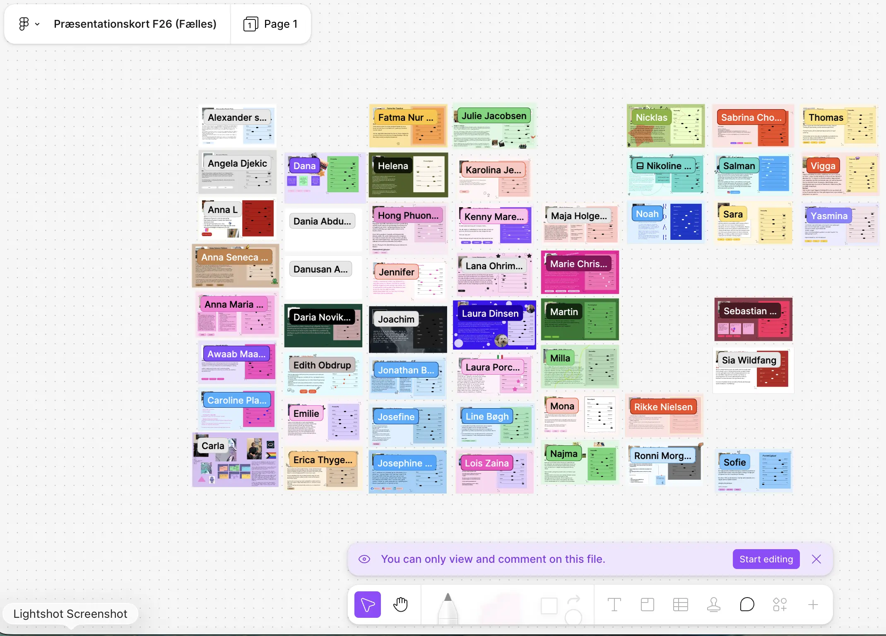
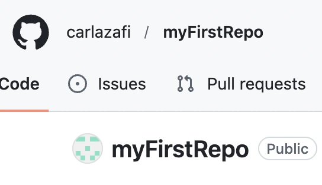
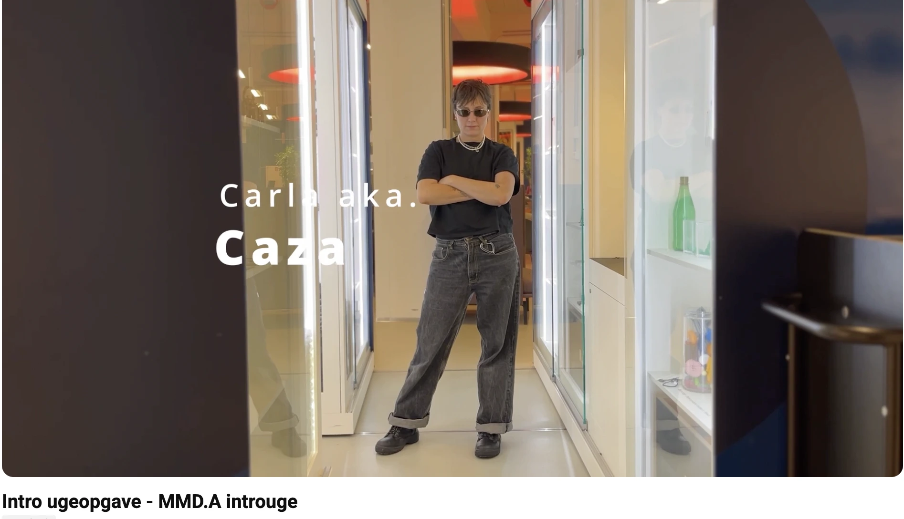

Projekter
Intro
Proces
Oprettelse af første Github repository og grundforståelse af GitHub pages.
Præsentaion af Figma som designvæktøj
Første gruppeopgave med teamwork redskaber som udmundede i skabelsen af en introvideo af gruppemedlemmer via idéudvikling, storyboard, filmning, klipning og præsentation
Reflektion
De spæde steps gav mulighed for at få en snert af hvordan projektprocesser fremover ville se ud- 1. læring og præsentation af et værktøj 2. planlægning og udarbejdelse 3. præsentation. Derudover gav temaet et bedre kendskab til medstuderende


